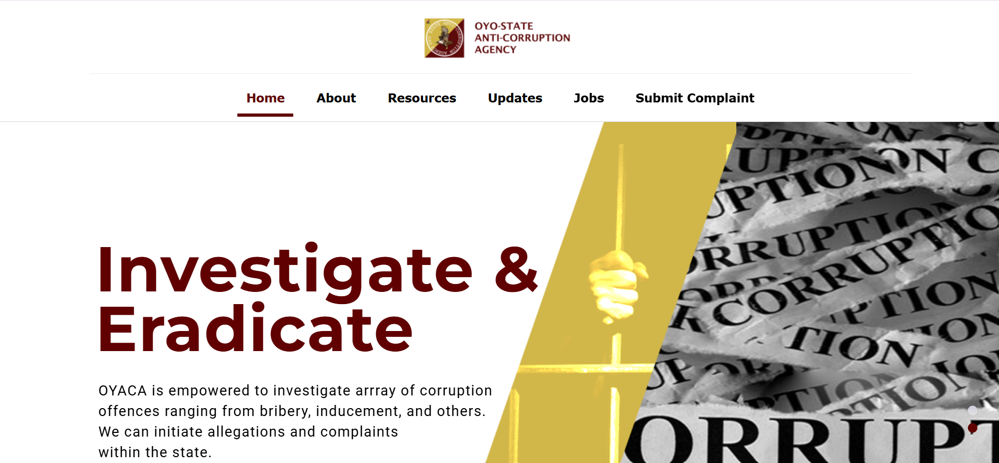

Oyo State Website Project
Supported work on a government website involving multiple agencies and departments. Checked documents, prepared content and handled photos and other materials.
View case study
My role: Project support and content coordination
Sector: Government
Stakeholders: Multiple agencies and departments
Background: The project involved collecting, checking and preparing information and materials from many agencies and departments for a government website.
My contribution:
Coordination challenge: Working with materials from different stakeholders while maintaining accuracy and keeping the work moving.
Team size: 5 to 10 people
Delivery evidence: Checked documents and photos from multiple agencies before upload. Reviewed the published content for accuracy.